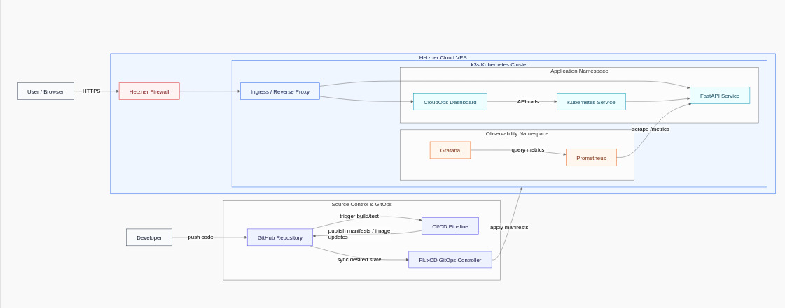

CloudOps Lite Platform demonstration
What this platform proves
CloudOps Lite demonstrates real DevOps and Platform Engineering practices on a live cloud environment. The project went beyond a local Kubernetes lab — it was deployed publicly on Hetzner Cloud, with GitOps-managed state, production-style observability, and a running API service.
- Hetzner VPS provisioned and running a k3s Kubernetes cluster in production mode
- FluxCD synchronising the cluster state directly from the GitHub repository — zero manual kubectl apply
- FastAPI microservice containerised, deployed via Kubernetes manifests, exposing
/healthand/metrics - Prometheus scraping application and infrastructure metrics on a live schedule
- Grafana dashboards visualising service uptime, request counts, and pod health
- Custom CloudOps dashboard aggregating cluster status, API health, and Prometheus/Grafana availability
How the platform is structured
Dashboard & Screenshots
Custom CloudOps dashboard showing Hetzner k3s status, API health, Prometheus and Grafana status, and live platform metrics.

Architecture Diagram
GitOps workflow: GitHub → FluxCD → k3s cluster on Hetzner Cloud. FastAPI, Prometheus, and Grafana all running as Kubernetes workloads.

How I built it, step by step
- Provision: Created a Hetzner Cloud VPS and installed k3s to bootstrap a lightweight production Kubernetes environment.
- GitOps setup: Installed FluxCD and bootstrapped it against the GitHub repository so all cluster changes flow through Git — no manual apply commands.
- Application deployment: Built a FastAPI microservice, containerised it with Docker, and wrote Kubernetes Deployment + Service manifests managed by Flux.
- Metrics exposure: Added a Prometheus-compatible
/metricsendpoint to the FastAPI service and a/healthendpoint for liveness probes. - Observability stack: Deployed Prometheus via Kubernetes manifests (Flux-managed) to scrape application metrics; connected Grafana with pre-built dashboards.
- Custom dashboard: Built a CloudOps dashboard that queries the live cluster and APIs to show real-time platform status in one view.
- IaC structure: Organised the entire repo using a Terraform-inspired directory structure for clean, reproducible deployments.
Key components
Hetzner Cloud VPS
Public cloud VPS — not localhost. Real egress, real IP, real latency. The platform runs on production infrastructure, not a desktop VM.
k3s Kubernetes
Lightweight Kubernetes distribution ideal for single-node cloud deployments. Managed namespaces, deployments, and services for all workloads.
FluxCD GitOps
Cluster state is always a reflection of the GitHub repository. Any commit triggers automatic reconciliation — no imperative kubectl commands.
FastAPI Microservice
Containerised Python API with two operational endpoints: /health returns service status; /metrics exposes Prometheus-compatible counters and gauges.
Prometheus
Deployed as a Kubernetes workload, configured to scrape the FastAPI service on a fixed interval. Metrics stored and queryable via PromQL.
Grafana
Connected to Prometheus as a datasource. Dashboards visualise request rates, pod health, and service uptime over time.
What this demonstrates
- Ability to deploy and operate Kubernetes workloads on a real public cloud VPS
- Hands-on GitOps with FluxCD — not just theory, but a running reconciliation loop
- End-to-end observability: application exposes metrics, Prometheus collects them, Grafana visualises them
- Clean IaC project structure for reproducible, documented deployments
- API design with operational endpoints (/health, /metrics) following DevOps best practices